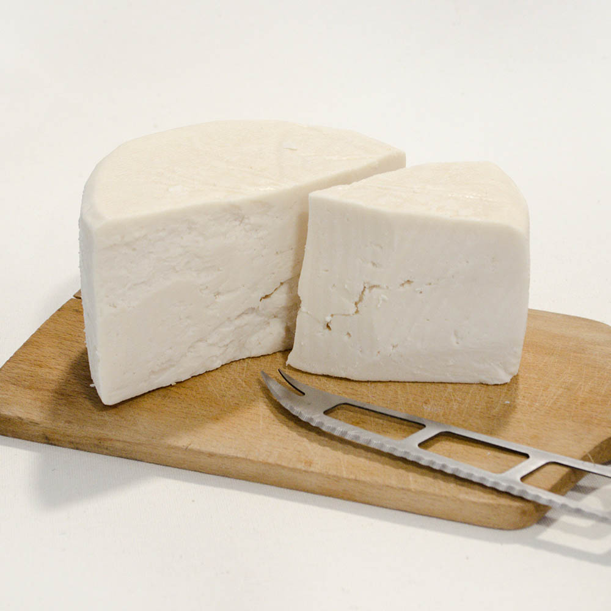

SajtOK - A Sajtok birodalma!
Kecskesajt
- Eredet: Franciaország, bár sok más országban is népszerű..
- Elkészítési mód: Kecskesajt különféle érési idővel készülhet, krémes, friss verzióktól az érettebb, keményebb sajtokig. A tejet baktériumkultúrával savanyítják, majd formákba öntik és érlelik. Az érlelés idejétől függően változik az íze: a fiatal kecskesajtok lágyak, enyhén savanykásak, míg az érettek fűszeresek és erőteljesek.
- Tárolás: Hűtőben kell tartani, és jól becsomagolva, hogy megőrizze állagát és ízét. A keményebb kecskesajtokat hosszabb ideig lehet tárolni, míg a frisseket gyorsabban el kell fogyasztani.
- Érdekesség: Kecskesajtot gyakran salátákhoz, péksüteményekhez, és grillezéshez használják. Könnyen emészthető és alacsonyabb a zsírtartalma, mint sok tehénsajtnak.
